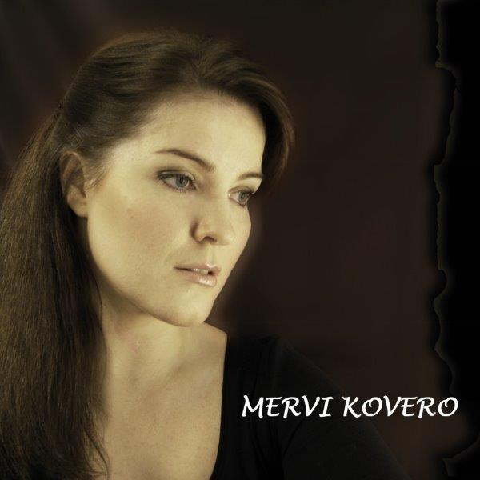

SÄVELLYKSIÄNI ÄÄNITTEILLÄ
Menestynein:
-TRIPLAPLATINAA: LASSE HOIKKA & SOUVARIT:
Sinisenä lintuna haluaisin lentää

(Säv. & san. Ahti Nikkonen, sov. Teuvo Nummela).
jonka Lasse Hoikka ja Souvarit levyttivät vuonna 1993 saavutti kultaa vuonna 1996
ja tammikuussa 2004 ylitti "vanhan hyvän ajan" platinalevyrajan 50 000 kpl ja tuplaplatinaa joulukuussa 2013 (yli 100 000 kpl). Myyty yli 150 000 kpl (7.9.2018 Saariselällä.)
Kiitos
Souvarit ja Teukka (Tatsia)!
Olen toisena säveltäjänä kappaleessa Tulikirjaimin, joka saavutti kultalevyn myyntirajan
joulukuussa 2004 myös Lasse Hoikan ja Souvarit yhtyeen ansiosta.
PLATINAJUHLAT WANHAN TANSSIKELLARISSA

Triplaplatinaa 7.9.2018 Saariselällä

ÄÄNITEJULKAISUJA:
Sami Niemelä: Tähdenlentona vain (YouTube)
(Säv. & sov. Ahti Nikkonen & Seppo Summanen,
san. Tomi Suni) Tausta: SJC-band. ASTOMCD12
Video/taustakuvitus: Ahti Nikkonen & Kyllikki Räsänen
Kyösti Hartikainen & Antti Holopainen: Lähtöjä ja Paluita:
1) Antti Holopainen: Askel rakkauteen (YouTube)
(Säv. & sov. Ahti Nikkonen & Seppo Summanen,
san. Keijo Laitinen) Tausta: SJC-band ASTOMCD9.
Tätä Suomi tanssii listalla sijalla 27 (8 viikkoa listoilla).
2) Kyösti Hartikainen: Jos uskon haaveeseen (YouTube)
(Säv. & sov. Ahti Nikkonen & Seppo Summanen,
san. Maritta Niskanen) Tausta: SJC-band ASTOMCD10.
Tätä Suomi tanssii listalla sijalla 30.
3) Antti Holopainen: Tämä outo ja kaunis tie (YouTube)
(Säv. Ahti Nikkonen & Seppo Summanen,
san. Päivikki Juvakoski-Heino)
Video/kuvitustausta: Ahti Nikkonen & Kyllikki Räsänen
4) Kyösti Hartikainen: Ehkäpä jään (YouTube)
(Säv. & sov. Ahti Nikkonen & Seppo Summanen,
san. Tomi Suni) Tausta: SJC-band.
5) Antti Holopainen: Luokses taas saavun (YouTube)
(Säv. & sov. Ahti Nikkonen & Seppo Summanen,
san. Tomi Suni) Tausta: SJC-band.
6) Kyösti Hartikainen: Kaukana kaukana kerran (YouTube)
(Säv. & sov. Ahti Nikkonen & Seppo Summanen,
san. Päivikki Juvakoski:Heino) Tausta: SJC-band.
7) Antti Holopainen & Kyösti Hartikainen: Palaisin luokses (YouTube)
(Säv. & sov. Ahti Nikkonen & Seppo Summanen,
san. Tomi Suni) Tausta: SJC-band.
Video/kuvitustausta: Ahti Nikkonen & Kyllikki Räsänen
Kyösti Hartikainen: Jos uskon haaveeseen (YouTube)
(Säv. & sov. Ahti Nikkonen & Seppo Summanen,
san. Maritta Niskanen) Tausta: SJC-band ASTOMCD9.
Antti Holopainen: Askel rakkauteen (YouTube)
(Säv. & sov. Ahti Nikkonen & Seppo Summanen,
san. Keijo Laitinen) Tausta: SJC-band ASTOMCD9.
Lasse Hoikka & Souvarit: Tanssilavan tunnelmaa (YouTube)
(Säv, Ahti Nikkonen & Seppo Summanen
san. Tomi Suni. Sov. Jari Puhakka)
Kaunis maailma 40-Vuotis Juhlatupla cd Mager-29 2018
Tanssilavan tunnelmaa Mager 031 - FI73H1800011 2018
Mikko Niemelä: Kesällä kerran (YouTube)
Säv. & sov. Ahti Nikkonen & Seppo Summanen
san. Päivikki Juvakoski-Heino
Tausta: SJC-band, taustalaulu: Seppo Summanen
Cd-monistus, kannen suunnittelu: Jurvan Musiikkipaja
© & ℗ 2018 ASTOMCD-07
Mikko Niemelä: Sua ainoastaan rakastan (YouTube)
Säv. & sov. Ahti Nikkonen & Seppo Summanen,
san. Päivikki Juvakoski-Heino,
Tausta: SJC-band, taustalaulu: Seppo Summanen
© & ℗ 2018 ASTOMCD-07
Mikko Niemelä: Sinulle (YouTube)
Säv. Asko Hannuksela, san. Jarmo Ojanen
Tausta: SJC-band, taustalaulu: Seppo Summanen
© & ℗ 2018 ASTOMCD-07
Mikko Niemelä: Rakkauden syksy (YouTube)
Säv. & sov. Ahti Nikkonen & Seppo Summanen
san. Raimo Kokko
Tausta: SJC-band, taustalaulu: Seppo Summanen
© & ℗ 2018 ASTOMCD-07
Ulla-Jaana Riekkoniemi: Kapinoiva sydän (YouTube)
(Säv. & sov. Ahti Nikkonen & Seppo Summanen,
san. Marjo Pajuranta, tausta SJC-BAND,
taustalaulu Seppo Summanen)
© & ℗ 2018 ASTOMCD-6
Ulla-Jaana Riekkoniemi: Vain rakkaus jää (YouTube)
(Säv. & sov. Ahti Nikkonen & Seppo Summanen,
san. Tomi Suni, tausta SJC-BAND,
taustalaulu Seppo Summanen)
© & ℗ 2018 ASTOMCD-6
Ulla-Jaana Riekkoniemi: Tuollainen tyttö (YouTube)
(A Girl like You, Jerry Lordan, suom. san. Sauvo Puhtila,
tausta SJC-BAND, taustalaulu Seppo Summanen)
© & ℗ 2018 ASTOMCD-6
Ulla-Jaana Riekkoniemi: Paljon sanomatta jää (YouTube)
(Säv. & san. Jukka Kuoppamäki,
tausta SJC-BAND, taustalaulu Seppo Summanen)
© & ℗ 2018 ASTOMCD-6
Sami Niemelä: Sydämeen suljettu (YouTube)
(Säv. Ahti Nikkonen, san. Maritta Niskanen,
sov. Ahti Nikkonen & Seppo Summanen, tausta SJC-BAND,
taustalaulu Seppo Summanen)
© & ℗ 2018 ASTOMCD-5
Sami Niemelä: Miksi juuri sinä (YouTube)
(Säv. & sov. Ahti Nikkonen & Seppo Summanen,
san. Marjo Pajuranta, tausta SJC-BAND,
soolokitara Pepe Kovanen, taustalaulu Seppo Summanen)
© & ℗ 2018 ASTOMCD-5
Marjut Dillström: Auta minut yön yli (YouTube)
(Säv. Ahti Nikkonen & Seppo Summanen,
san. Maritta Niskanen, sov. Jukka Laaksonen,
taustalaulu Madonnat-kvartetti)
Sävelten siivin 2018.
SJC-BAND: Luokses taas saavun (YouTube)
(säv. & sov. Ahti Nikkonen & Seppo Summanen,
san. Tomi Suni, taustalaulu Seppo Summanen,
© & ℗ 2017 ASTOMCD-4
SJC-BAND: Sateenuhka silmissään (YouTube)
(säv. & sov. Ahti Nikkonen & Seppo Summanen,
san. Maritta Niskanen, taustalalu Seppo Summanen,
© & ℗ 2017 ASTOMCD-4
SJC-BAND: Tähän rakkauteen (YouTube)
(säv. & sov. Ahti Nikkonen & Seppo Summanen,
san. Päivikki Juvakoski-Heino, taustalaulu Seppo Summanen)
© & ℗ 2017 ASTOMCD-4
SJC-BAND: Tippa sydänverta (YouTube)
(säv. & sov. Ahti Nikkonen & Seppo Summanen,
san. Jussi Tolonen, taustalaulu: Seppo Summanen)
© & ℗ 2017 ASTOMCD-4
Mikko Niemelä: Antaa tulla lunta tupaan (YouTube)
(Säv. Ahti Nikkonen & Seppo Summanen & Tomi Suni,
san. Tomi Suni, sov. Ahti Nikkonen & Seppo Summanen,
taustalaulu: Seppo Summanen, tausta: SJC-band.
Masterointi, cd-monistus, laulujen äänitys: Jurvan Musiikkipaja)
© & ℗ 2017 ASTOMCD-03
Mikko Niemelä: Rantalava (YouTube),
Säv. Asko Hannuksela, san. Jarmo Ojanen
Tausta: SJC-band, taustalaulu: Seppo Summanen
Masterointi, cd-monistus, laulujen äänitys: Jurvan Musiikkipaja
© & ℗ 2017 ASTOMCD-03
Mikko Niemelä: Sinä lohduta mua (YouTube),
Säv. & sov. Ahti Nikkonen & Seppo Summanen,
san. Päivikki Juvakoski-Heino,
Tausta: SJC-band, taustalaulu: Seppo Summanen
Masterointi, cd-monistus, laulujen äänitys: Jurvan Musiikkipaja
© & ℗ 2017 ASTOMCD-03
Mikko Niemelä: Vanha kunnon twist (YouTube),
Säv. & sov. Ahti Nikkonen & Seppo Summanen,
san. Tomi Suni, Tausta: SJC-band, taustalaulu: Seppo Summanen
Masterointi, cd-monistus, laulujen äänitys: Jurvan Musiikkipaja
© & ℗ 2017 ASTOMCD-03
Hannu Hautaniemi: Yön musta joutsen (YouTube)
Säv. Ahti Nikkonen & Seppo Summanen, san. Nina J. Hedkrok
Sov. Janne Hyöty, Sugar House Publishing. HH12017.
Mikko Niemelä: Onnen kosketus (YouTube)
Säv. Ahti Nikkonen & Seppo Summanen, san. Kyösti Timonen.
Mikko Niemelä: Uusi kevät (YouTube)
Säv. Ahti Nikkonen & Seppo Summanen, san. Tomi Suni.
Mikko Niemelä: Kotijärvi-valssi (YouTube)
Säv. Asko Hannuksela, san. Jarmo Ojanen
Mikko Niemelä: Häätango (YouTube)
Säv. Asko Hannuksela, san Jarmo Ojanen.
Mikko Niemelä: Sä olet kaikki. (YouTube)
Säv. Ahti Nikkonen & Seppo Summanen, san. Tomi Suni
Sov. Ahti Nikkonen & Seppo Summanen, taustat SJC-band,
taustalaulut Seppo Summanen.
ASTOMCD-02 2016, (P) ASTOM.
Aki Hietala & Jaska Mäkynen: Kalajoki. (YouTube)
Jaska Mäkynen: Kuin lailla kauneimman ruusun. (YouTube)
Aki Hietala: Tähdenlentona vain (YouTube)
1,2 & 3: Säv. Ahti Nikkonen & Seppo Summanen,
san. Tomi Suni. 1 & 2: tausta SJC-band,
1) Kitarasoolo: Harri Risku,
3) Kitarat: Pepe Kovanen, basso: Topi Hartikainen,
koskettimet: Pasi Suikkanen, rummut Jarmo Peippo.
Saksofonit, taustalaulu ja niiden sovitus: Aki Hietala (1-3).
Sov. Ahti Nikkonen & Seppo Summanen (1-2), Pepe Kovanen (3).
© & ℗ ASTOMCD-01 2016
Rainer Bollström: Salattu rakkaus (YouTube)
Säv. Ahti Nikkonen - san. Kyösti Timonem - sov. Antti Toivola
Miehen elämää RBCD201401
RAJAN MIEHET: Rukajärven tie.
Säv. Ahti Nikkonen - san. Mauri Kärkkäinen
Tuomo Rönkkö: Kaino Aino SJCCD02
KANSAN KARAOKE 4 (KAKA4) [Karaokeversio]
Säv. & sov. Ahti Nikkonen & Seppo SummanenRönkkö -
san. Maritta Niskanen
Tuomo Rönkkö: Rankkaa ylpeyden taksaa (Kantakapakassa)
KANSAN KARAOKE 4 (KAKA4): [Karaokeversio]
Säv. & sov. Ahti Nikkonen & Seppo Summanen -
san. Päivikki Juvakoski-Heino.
Tuomo Rönkkö: Häntä (mä rakastan häntä).
Säv. & sov. Ahti Nikkonen & Seppo Summanen -
san. Timo Sinnemaa.
Tuomo Rönkkö: Täältä löytyy rauha.
Säv. & sov. Ahti Nikkonen & Seppo Summanen -
san. A. I. Piippo
Robert Orjavuono: Täyden kympin nainen
KANSAN KARAOKE 4 (KAKA4): [Karaokeversio]
Lasse Hoikka: Luota aina unelmiin (YouTube).
(Säv. Ahti Nikkonen, san. Olavi Koskinen, sov. Pauli Ruuskanen)
KANSAN KARAOKE 3 [KAKA3] (2013): [Karaokeversio]

Mervi Kovero: Ketään syytä en
(Säv. Ahti Nikkonen - San. Birgitta Äijälä)
http://www.youtube.com/watch?v=ea8e9R37thc&feature=youtu.be
MJK 2012
KANSAN KARAOKE 3 [KAKA3[ (2013): [Karaokeversio]
Mervi Kovero: Sateinen on Wimbledon
(Säv. Ahti Nikkonen & Seppo Summanen - San. Päivikki Juvakoski-Heino)
http://www.youtube.com/watch?v=oGFq-oCGnPw&feature=plcp
MJK 2012
KANSAN KARAOKE 2 [KAKA2] (2013): [Karaokeversio]
Mervi Kovero: Sua koskaan kuunnellut en
(Säv. Markku Kuoppa & Ahti Nikkonen - San. Anja Veck)
http://www.youtube.com/watch?v=JzWyXUB1sM4&feature=youtu.be
MJK 2012
Mervi Kovero: Tanssi aurinkoon
(Säv. Ahti Nikkonen & Seppo Summanen - San. Maritta Niskanen)
http://www.youtube.com/watch?v=C7Pa6iM0gPo&feature=youtu.be
MJK 2012
KANSAN KARAOKE 2 [KAKA2] (2013): [Karaokeversio]
Souvarit: Tulikirjaimin. Souvarit ja Pekkaniskan Pojat: Tanssikansan suosikit CD 2012.
(Säv. Markku Kuoppa & Ahti Nikkonen - san. Maritta Niskanen,
sov. Jukka Lampela).
Terho Torni (2012): Rakkaimpas sun.
(Säv. Ahti Nikkonen - san. Janne E. Aho,
sov. Ahti Nikkonen & Terho Torni).
BIISINURKKA 3 KARAOKE DVD,
BIISINURKKA 3 CD.
http://www.youtube.com/watch?v=qt4obZE73jo&feature=plcp
Tuomo Rönkkö (2012): Pieni kuva sinusta
(säv. & sov. Ahti Nikkonen & Seppo Summanen -
san. Jussi Tolonen).
BIISINURKKA 3 KARAOKE DVD,
BIISINURKKA 3 CD.
http://www.youtube.com/watch?v=na--QvHSz0E&feature=context-cha
Tuomo Rönkkö (2011):
Pilvipoutaa (YouTube)
(säv. & sov. Ahti Nikkonen & Seppo Summanen -
san. Maritta Niskanen)
SJCCD-1.
KANSAN KARAOKE 4 (KAKA4) [Karaokeversio]
Tuomo Rönkkö (2011):
Joku laulaa suihkussa
(säv. & sov. Ahti Nikkonen & Seppo Summanen -
san. Päivikki Juvakoski-Heino).
SJCCD-1.
Tuomo Rönkkö (2011):
Kielin kitaran (sua mä rakastan)
(säv. & sov. Ahti Nikkonen & Seppo Summanen -
san. Kyösti Timonen).
SJCCD-1.
Tuomo Rönkkö (2011):
Pieni kuva sinusta (Youtube)
(säv. & sov. Ahti Nikkonen & Seppo Summanen -
san. Jussi Tolonen)
SJCCD-1.
Raivopäät Feat, Friends (2010/2011): Rauhaa & Rakkautta. (Näyte mp3).
(Säv. & san. Ahti Nikkonen).
DIGITAL SINKKU (2010).
PUNKROCK JUKEBOX 4 ((2011).
PROPAGANDA RECORDS. PRO 2095.
Asko Leinonen (2011): Kiertäjän tie. (Näyte mp3).
(Säv. & sov. Ahti Nikkonen & Seppo Summanen, san. Kyösti Timonen).
KUU KULKEE. CDAL2.
Asko Leinonen (2011): Yksinäisen ystäväksi. (Näyte mp3).
(Säv. & sov. Ahti Nikkonen & Seppo Summanen, san. Kyösti Timonen).
KUU KULKEE. CDAL2.
Terho Torni (2011): Paha Pajari.
(Säv & san. Ahti Nikkonen, sov. Ahti Nikkonen & Terho Torni).
MONTUN HENKI. FLAME MUSIC DICD 18.
Ismo Pyykkö (2011): En pelkää elämää.
(Säv. & sov. Ahti Nikkonen, san. Olavi Koskinen).
RAKKAUS MAISEMAAN. KOPINACD-5.
Ismo Pyykkö (2011): Kaipausta tango soi.
(Säv. & sov. Ahti Nikkonen, san. Olavi Koskinen).
RAKKAUS MAISEMAAN. KOPINACD-5.
Ismo Pyykkö (2011): Kun ruusut kukkii.
(Säv. Ahti Nikkonen, san. Kyösti Timonen, sov. Erkki Friman).
RAKKAUS MAISEMAAN. KOPINACD-5.
Ismo Pyykkö (2011): Lappi on kauneuden maa.
(Säv. & sov. Ahti Nikkonen, san. Olavi Koskinen).
RAKKAUS MAISEMAAN. KOPINACD-5.
Ismo Pyykkö (2011): Luota hyvyyden ihmeeseen.
(Säv. & sov. Ahti Nikkonen, san. Olavi Koskinen).
RAKKAUS MAISEMAAN. KOPINACD-5.
Ismo Pyykkö (2011): Maailman kaunein kukkanen.
(Säv. Ahti Nikkonen, san. Kyösti Timonen, sov. Erkki Friman).
RAKKAUS MAISEMAAN. KOPINACD-5.
Ismo Pyykkö (2011): Niin ihmeellinen on rakkaus.
Säv. Ahti Nikkonen & Ismo Pyykkö,
san. Ismo Pyykkö & Olavi Koskinen, sov. Jussi Eriksson).
RAKKAUS MAISEMAAN. KOPINACD-5.
Ismo Pyykkö (2011): Olet aurinkoni.
(Säv. Ahti Nikkonen, san. Olavi Koskinen,
sov. Ahti Nikkonen & Robert Orjavuono).
RAKKAUS MAISEMAAN. KOPINACD-5.
Ismo Pyykkö (2011): On elämä ihmeellinen.
(Säv. & sov. Ahti Nikkonen, san. Olavi Koskinen).
RAKKAUS MAISEMAAN. KOPINACD-5.
Ismo Pyykkö (2011): Rakkauden valkosiivet.
(Säv. & sov. Ahti Nikkonen, san. Olavi Koskinen).
RAKKAUS MAISEMAAN. KOPINACD-5.
Ismo Pyykkö (2011): Sielujen sinfoniaa.
(Säv. & sov. Ahti Nikkonen, san. Olavi Koskinen).
RAKKAUS MAISEMAAN. KOPINACD-5.
Ismo Pyykkö (2011): Syliisi sun.
(Säv. Ahti Nikkonen, san. Kyösti Timonen, sov. Jussi Eriksson).
RAKKAUS MAISEMAAN. KOPINACD-5.
Ismo Pyykkö (2011): Tanssi vain.
(Säv. Ahti Nikkonen, san. Olavi Koskinen, sov. Seppo Korhonen).
RAKKAUS MAISEMAAN. KOPINACD-5.
Ismo Pyykkö (2011): Tule luokseni jälleen.
(Säv. & sov. Ahti Nikkonen, san. Olavi Koskinen).
RAKKAUS MAISEMAAN. KOPINACD-5.
Ismo Pyykkö (2011): Voisinpa siivillä liitää.
(Säv. Ahti Nikkonen, san. Olavi Koskinen,
sov. Ahti Nikkonen & Robert Orjavuono).
RAKKAUS MAISEMAAN. KOPINACD-5.
Terho Torni (2010): Kiteen Kirkas. (Videonäyte: wmv).
(Säv. Ahti Nikkonen, san. Einari Havukainen,
sov. Timo Hacklin & Jorma Matikainen & Ahti Nikkonen & Terho Torni.)
BIISINURKKA 2 KARAOKE DVD, BNDVD-00002.
BIISINURKKA BN2 KOKOELMA CD, BNCD-0003.
Terho Torni (2010): Paha Pajari. (Videonäyte: wmv).
(Säv. & san. Ahti Nikkonen, sov. Ahti Nikkonen & Terho Torni).
BIISINURKKA 2 KARAOKE DVD, BNDVD-00002.
BIISINURKKA BN2 KOKOELMA CD, BNCD-0003.
Terho Torni (2010): Pirun tyhmä mies. (Videonäyte: wmv).
(Säv. Ahti Nikkonen, san. Kyösti Timonen).
BIISINURKKA 2 KARAOKE DVD, BNDVD-00002.
BIISINURKKA BN2 KOKOELMA CD, BNCD-0003.
Nina Rantanen (2010): Kaipaan sua ainiaan. (Näyte: mp3).
(Säv. Ahti Nikkonen, san. Olavi Koskinen, sov. Tapio Moisanen).
KAJAANIN VIIHDESOLISTIT: SIELUN SISÄLLÄ TUULEE. KVSCD-7.
Sam Jones Combo (2010): Potsipäivät. (Video).
(Säv. & san. & sov. Ahti Nikkonen & Seppo Summanen).
AJENCD-6.
Richard (Robert Orjavuono) (2010): A rock'n' roll robot. (Video).
(Säv. Ahti Nikkonen & Robert Orjavuono,
words: Lars E. Carlsson & Hans Siden).
Lasse Hoikka (2010): Luota aina unelmiin. (Näyte: mp3).
(Säv. Ahti Nikkonen, san. Olavi Koskinen, sov. Pauli Ruuskanen).
LASSE HOIKKA: JOS SINÄKIN TAHDOT.
Terho Torni (2010): Paha Pajari. (Video).
(Säv. & san. Ahti Nikkonen, sov. Ahti Nikkonen & Terho Torni).
AJENCD-3B.
Terho Torni (2010): Kiteen Kirkas. (Videonäyte: wmv).
(Säv. Ahti Nikkonen, san. Einari Havukainen,
sov. Timo Hacklin & Jorma Matikainen & Ahti Nikkonen & Terho Torni).
AJENCD-3B
Taifun (2010/1979): Paha paha paha Pajari.
(Säv. & san. Ahti Nikkonen, sov. Jorma Matikainen).
AJENCD-3B.
Vennu (Sven-Erik Ikola) (2010/1978): Kiteen Kirkas. (Video).
(Säv. Ahti Nikkonen, san. Einari Havukainen, sov. Jorma Matikainen).
AJENCD-3B.
Richard (Robert Orjavuono) (2009): Pilvitie. (Video).
(Säv. Ahti Nikkonen, san. Aune Hakulinen). AJENCD3.
Miia Mäkelä & Siluetti (2009): Kuljen luokse pihakoivujen. (Näyte: mp3).
(Säv. Ahti Nikkonen, san. Birgitta Äijälä, sov. Keijo Honkanen).
Kajaanin tanssimusiikkiklubi CD FI-KTB-09 2009.
Jouni Ruokamo (2008): Sielujen Sinfoniaa. (Näyte: mp3).
(Säv. Ahti Nikkonen, san. Olavi Koskinen. sov. Jouni Ruokamo).
Lasse Hoikka & Souvarit: 30-vuotis Juhlalevy. PETSICD-14 2008.
Mikko Niemelä (2008): Kortti vie kortti tuo. (Näyte: mp3).
(Säv. Ahti Nikkoneni, san. Janne E. Aho, sov. Lucjan Czapilicki). FMCD-222.
Jukka Lampela (2008): Sydän vaatii soittamaan. (Näyte: mp3).
(Säv. Markku Kuoppa & Ahti Nikkonen, san. Maritta Niskanen, sov. Erkki Friman).
Vapaa kulkemaan. TATSIA CD 151
Prince Valiant (2007): Made of clay. (Video).
(Säv. Ahti Nikkonen, words: Lars E. Carlsson & Hans Siden).
ALCCD-1
Ismo Pyykkö: Sielujen sinfoniaa.
(Säv. Ahti Nikkonen, san. Olavi Koskinen).
Esko Rahkonen (2007): Salattu rakkaus. (Näyte: mp3).
(Säv. Ahti Nikkonen, san. Kyösti Timonen, sov. Veikko Samuli).
40 Tuttua ja toivotuinta. TATSIA CD 146.
Richard "Roope" (Robert Orjavuono) (2006): Minne vain (Video).
(Säv. Ahti Nikkonen, san. Kyösti Timonen,
sov. Ahti Nikkonen & Robert Orjavuono). AJEN002.
Kaija Pohjola (2006) Kulkurinainen. (Näyte: mp3).
(Säv. Ahti Nikkonen, san. Maritta Niskanen, sov. Teuvo Nummela). TATSIACDS.
Terho Torni (2006): Miten täällä mies niin pirun tyhmä olla voi. (Mp3).
(Säv. Ahti Nikkonen, san. Kyösti Timonen. AJEN0001.
Terho Torni (2006): Nyt sen teen.
(Säv. & san. Ahti Nikkonen). AJEN0001.
Jarmo Tuuri (2006): Sinitähtien aikaan.
(Säv. Ahti Nikkonen, san. Kyösti Timonen). AJEN001.
Terho Torni (2006): Ennen aamunkoittoa.
(Säv. & san. Ahti Nikkonen). AJEN0001.
Ismo Pyykkö (2005): Soi enkelten kuoro.
(Säv. Ahti Nikkonen, san. Olavi Koskinen). KOPINACD1.
Masa Juusola & Juhani Markola (2004): Auringon tie.
(Säv. Markku Kuoppa & Ahti Nikkonen, san. Marek Kattelus, sov. Jari Holm).
POHJOISEN TÄHDET II.
Jaska Mäkynen (2004): Enemmän kuin ystäväksi.
(Säv. Ahti Nikkonen, san. Kyösti Timonen, sov. Jussi Eriksson).
PARHAAT 40. JMCD013-1.
Köpi Koski & Projekti (2004): Kaikki onnistuu.
(Säv. Ahti Nikkonen, san. Kyösti Timonen, sov. Teuvo Nummela).
40 SUOMI-ISKELMÄ CD2. VLCD1102D.
Maija Muikku (2004): Tänään vielä.
(Säv. Markku Kuoppa & Ahti Nikkonen, san. Maritta Niskanen, sov. Hannu Laitinen).
CD: TÄNÄÄN VIELÄ. MMSIN0704 HTL RECORDS.
Masa Juusola & Juhani Markola (2004): Auringon tie.
(Säv. Markku Kuoppa & Ahti Nikkonen, san. Marek Kattelus, sov. Jari Holm).
MARSICD-4.
Lasse Hoikka & Souvarit (2004): Sinisenä lintuna haluaisin lentää.
(Säv. & san. Ahti Nikkonen, sov. Teuvo Nummela).
SOUVARIT 10 HITTIÄ. KARAOKEKESKUS PRO DVD vol. 3.
Lasse Hoikka & Souvarit (2004): Sinisenä lintuna haluaisin lentää.
(Säv. & san. Ahti Nikkonen, sov. Teuvo Nummela).
SOUVARIT 20 HITTIÄ KOTIKARAOKE. GPOWDV027
Lasse Hoikka & Souvarit (2004): Sinisenä lintuna haluaisin lentää.
(Säv. & san. Ahti Nikkonen, sov. Teuvo Nummela).
40 TUTTUA JA TOIVOTUINTA. TATSIACD 124.
Risto Nevala (2003): Yksinäisyys vain.
(Säv. Ahti Nikkonen, san. Olavi Koskinen, sov. Erkki Friman).
LEVOTON TUULI. FIRNA03.
Lasse Hoikka & Souvarit (2002): Sinisenä lintuna haluaisin lentää
(Säv. & san. Ahti Nikkonen, sov. Teuvo Nummela.
ILLAN VARJOON HIMMEÄÄN, CD4. OY VALITUT PALAT. V00212VVV3.
Lasse Hoikka & Souvarit (2002): Kuin tulikirjaimin.
(Säv. Markku Kuoppa & Ahti Nikkonen, san. Maritta Niskanen, sov. Jukka Lampela).
10 UUTTA JA 10 SUOSITUINTA. TATSIACD 117.
Lasse Hoikka & Souvarit (2002): Sinisenä lintuna haluaisin lentää.
(Säv. & san. Ahti Nikkonen, sov. Teuvo Nummela).
SINISENÄ LINTUNA HALUAISIN LENTÄÄ. TATSIA CD 116.
Esko Rahkonen (2002): Salattu rakkaus.
(Säv. Ahti Nikkonen, san. Kyösti Timonen. Sov. Veikko Samuli).
MEIDÄN HEHKUVA HIILLOS, CD1. Oy VALITUT PALAT. Lf26v02003vv3.
Umpijuntti (2002): Hikiän baarissa.
(Säv. Ahti Nikkonen, san. Timo Kytö).
HUH-HAH. UMJCD-1.
Umpijuntti (2002): Kahden sydämen kitara.
(Säv. Ahti Nikkonen, san. Timo Kytö).
HUH-HAH. UMJCD-1.
Umpijuntti (2002): Kontilleen.
(Säv. Ahti Nikkonen, san. Timo Kytö).
HUH-HAH. UMJCD-1.
Saska (Helmikallio) (2002): Tulilintu.
Säv. Ahti Nikkonen, san. Seppo Nissilä, sov. Janne Orava).
VIIHDEPALVELU ASTRAL. AICD-5.
Lasse Hoikka & Souvarit (2002): Kuin tulikirjaimin.
Säv. Markku Kuoppa & Ahti Nikkonen, san. Maritta Niskanen).
POHJOISEN TÄHDET. PETSICD-5.
Esko Rahkonen (2002): Salattu rakkaus.
Säv. Ahti Nikkonen, san. Kyösti Timonen, sov. Veikko Samuli).
CD: TANSSIJAN TIE. TATSIA CD 111.
Eila Pienimäki (2002): Päivä toisenlainen.
Säv. Ahti Nikkonen, san. Seppo Nissiä, sov. Tapani Puranen).
LAULUJA ELÄMÄSTÄ. ELRI KS CD-1.
Arto Wiillos (2001): Elämän tie.
(Säv. Ahti Nikkonen, san. A. I. Piippo, sov. Arto Tarkkonen).
ELÄMÄÄN VIRTA. AJVCD-35.
Arto Wiillos (2001): Päivä parempi huomenna on.
(Säv. & san. Ahti Nikkonen, sov. Arto Tarkkonen).
ELÄMÄN VIRTA AJVCD-35.
Arto Wiillos (2001): Sinitähtien aikaan.
Säv. Ahti Nikkonen, san. Kyösti Timonen, sov. Arto Tarkkonen).
ELÄMÄN VIRTA. AJVCD-35.
Köpi Koski & Projekti (2000): Kaikki Onnistuu.
(Säv. Ahti Nikkonen, san. Kyösti Timonen, sov. Teuvo Nummela).
KAUNEIN HETKI. TATSIA CD-58.
Ismo Pyykkö (2000): Niin ihmeellinen on rakkaus.
Säv. Ahti Nikkonen & Ismo Pyykkö,
san. Ismo Pyykkö & Olavi Koskinen, sov. Jussi Eriksson).
KESÄN KAUNEIN KUKKA. FDL-Records: FLDCD-33
Risto Nevala (1999): Käydään uuteen aamuun.
Säv. Ahti Nikkonen, san. Olavi Koskinen, sov. Erkki Friman).
KULTAISET VUODET. FIRN 399.
Risto Nevala (1999): Tuuli laulaa saa.
(Säv. Ahti Nikkonen, san. Olavi Koskinen, sov. Erkki Friman).
KULTAISET VUODET. FIRN 399.
Risto Nevala (1999): Äänikirje sydämestä.
(Säv. Ahti Nikkonen, san. Kyösti Timonen, sov. Erkki Friman).
CD: KULTAISET VUODET. FIRN 399.
Ismo Pyykkö (1998): Kun ruusut kukkii.
(Säv. Ahti Nikkonen, san. Kyösti Timonen, sov. Erkki Friman).
ISMO PYYKKÖ. IPCDS-0598.
Ismo Pyykkö (1998): Maailman kaunein kukkanen.
(Säv. Ahti Nikkonen, san. Kyösti Timonen, sov. Erkki Friman).
ISMO PYYKKÖ. IPCDS-0598.
Eila Pienimäki (1996): Päivä toisenlainen.
(Säv. Ahti Nikkonen, san. Seppo Nissilä, sov. Tapani Puranen).
MIELI MAASTA. STAKES-01.
Jaska Mäkynen (1995): Enemmän kuin ystäväksi.
(Säv. Ahti Nikkonen, san. Kyösti Timonen, sov. Jussi Eriksson).
ONNEN AAMU. FLDCD-8. (CD: ISKELMÄPARAATI. HOTCD-006MJ).
Lasse Hoikka & Souvarit (1993): Sinisenä lintuna haluaisin lentää.
(Säv. & san. Ahti Nikkonen, sov. Teuvo Nummela).
SINISENÄ LINTUNA HALUAISIN LENTÄÄ. TATSIA CD-58.
Lisäksi 1970-luvun lopulla ja 1980-luvulla on sävellyksiäni ollut lukuisa määrä pien- & omakustanteilla, esim. Kiteen kirkas, Vennu vaan, Paha paha paha Pajari, Olivia jne.
Niistä kuuluisin on (omana aikanaan pienoinen radiohitti):
Nikkonen, Ahti (säv. & san.) (1981): Rauhaa ja rakkautta.
Esittäjänä: T. Torni Band.